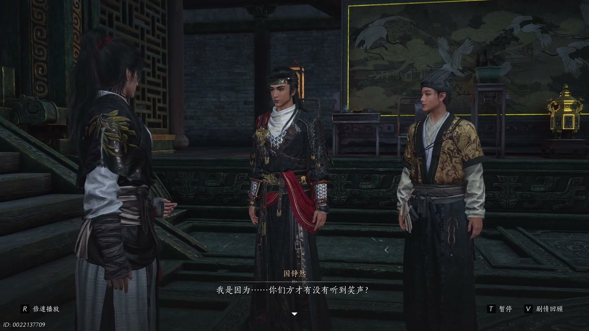
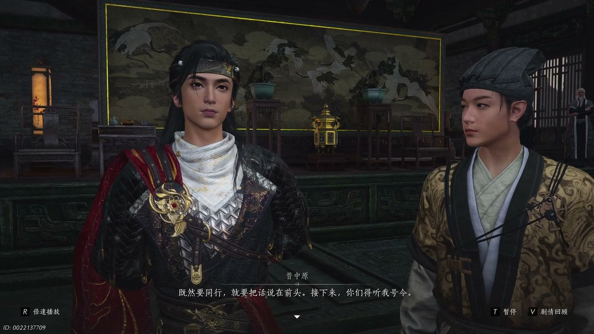
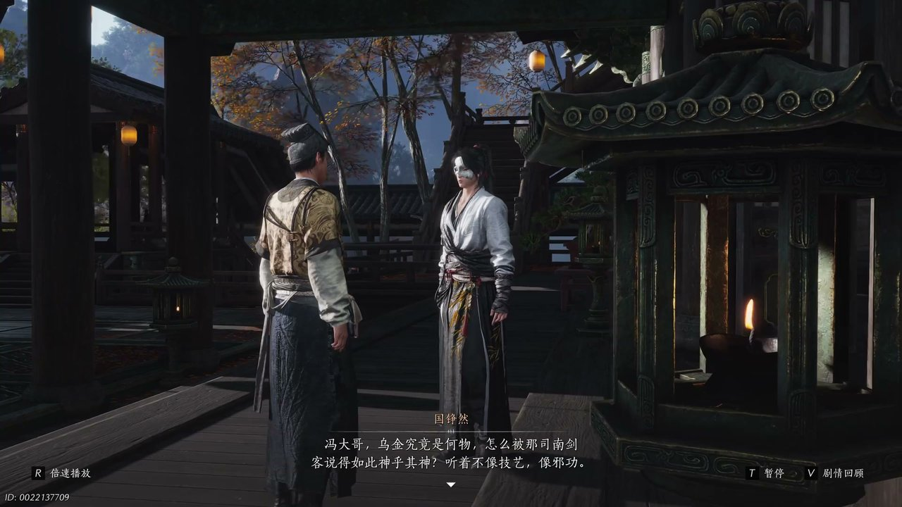
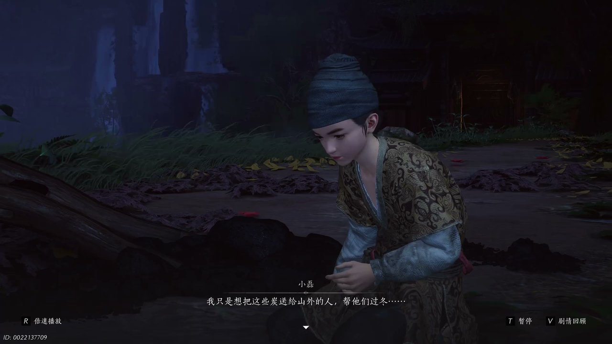
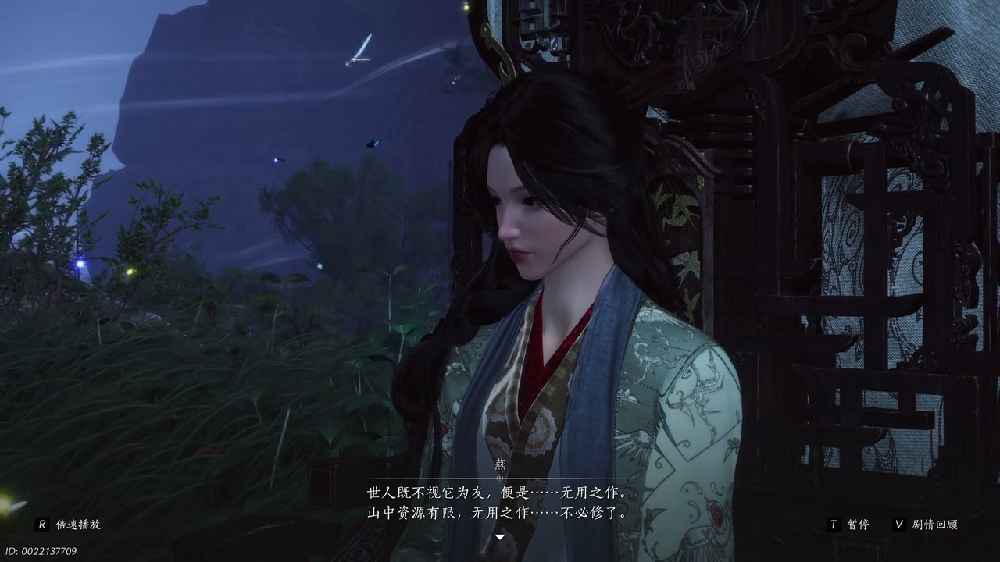

燕云背后的故事：第23集 巨子燕
燕云背后的故事：第23集 巨子燕

朋友们，上一集咱们说到——卷入开山封山之争、柴薪分配起冲突、司南剑客突袭大殿；新来的朋友可能纳闷，大殿之内纷争不断，巨子始终隐匿不肯现身。简单说，少东家借着客卿身份混入墨门长老议事，司南剑客突然发难，大殿局势瞬间变得紧张。可他哪知道，巨子并非不愿出面，而是被一众长老裹挟，进退两难。这不，鹞长老步步紧逼追问乌金下落，巨子燕被迫现身，矛盾彻底爆发。

大殿之中的争执还未平息，穷奇师施压的话语依旧回荡在石质厅堂里，石壁镶嵌的齿轮微微震颤，烛火随着气流轻轻晃动。鹳长老面露焦灼，抬手安抚情绪激动的鹞长老，开口说道：“穷奇师已退，乌金又在我们手中，这是好事，你何必又吵嚷起来。”鹞长老却丝毫不肯退让，眉头紧锁高声质问巨子燕：“巨子坠天夜那晚详情如何？乌金如今在何处，还请告诉我等吧。”巨子燕立于高台之上，神色淡漠，只淡淡吐出四个字：“乌金没有。”此言一出满座哗然，鹎长老连忙出面调和，希望巨子将实情告知在场众人，也好给全山弟子一个交代，可巨子依旧不愿吐露半分内情。少东家站在人群后方，耳朵微微一动，隐约捕捉到一丝诡异的笑声，他转头看向身旁的冯继升，询问对方是否也听见异样声响。

议事被迫中断，众人纷纷离开大殿，少东家、冯继升与晋中原三人退到殿外偏廊，廊下摆放着许多废弃的墨门机关构件。冯继升面露诧异，对着少东家开口：“游侠刚才你突然出手，吓了我一跳。”晋中原负手站在一旁，语气带着几分不满说道：“行侠仗义也分些时候吧，墨门家事外人不该管。”少东家摇了摇头，坚持自己方才听到了不明的笑声，可冯继升却说众人方才惊魂未定，根本无人发笑。少东家心里清楚，司南剑客没有得手，必定还会再次对巨子下手，他看向廊侧一道隐蔽石门，询问冯继升这扇门通往何处。冯继升迟疑片刻，坦言石门后方连通巨子专属的研究场所，具体路径自己也无法确定。

冯继升满心担忧巨子的安危，提议立刻前去提醒巨子提防刺杀，迈步就要走向石门，晋中原却抬手拦住了二人，沉声道：“等一下啊，既然要同行，就要把话说在前头，接下来你们得听我号令。”少东家毫不犹豫答应听从安排，随即又目光锐利看向晋中原，直言对方寻找巨子另有图谋。晋中原并不否认，坦言司南剑客的目标只是乌金而非巨子性命，若是少东家没有贸然出手阻拦，乌金恐怕早已落入对方手中。冯继升听得满心困惑，觉得巨子处境十分为难，晋中原却感慨弄权之人从来都不值得怜悯，身居高位者注定要承受所有风刀霜剑，无法奢求旁人同情。

晋中原不愿继续同行，独自转身离开，失去腰牌掩护的二人一时不知该如何面见巨子。少东家平复心绪，开口对冯继升说道：“穷奇师一闹，现在情势只怕更加复杂，司南剑客的目标不是巨子，是乌金。”随后他满是疑惑追问冯继升乌金到底是什么物件，竟引得各方势力争相抢夺。冯继升坦言自己所知有限，只知道墨门一直怀揣飞天宏愿，造出木鸢等机关器具，却只能借助风力，无法做到扶摇直上，直到现任巨子在位，才借着乌金取得关键性突破。少东家决定与冯继升分头打探情报，约定傍晚在计算机机关处汇合，再一同梳理线索。

少东家四处寻访墨门普通弟子打探消息，从一位弟子口中得知飞天城核心的金乌炉便是依托乌金打造，坠天之夜伏火失败才致使飞天城坠毁，巨子也因此落下残疾，至亲之人惨死当场。另一边冯继升检查被破坏的对外通路，发现隐蔽山道留有新鲜车辙与黑色石炭碎屑，断定有人偷偷向外运送墨门物资。二人在计算机处汇合之后，立刻循着痕迹前往隐蔽山道，恰好撞见司南剑客拦截一名运送物资的墨门弟子小磊。面对鹞长老的厉声质问，小磊满脸慌张辩解：“只偷过这些碎炭，我只是想把这些炭送给山外的人，帮他们过冬。”原来小磊的母亲与妹妹困在战乱的山外村落，寒冬将至缺柴少粮，他才会铤而走险私运石炭。

鹞长老坚持偷盗乃是墨门大忌，执意要将小磊驱逐出不见山，巨子燕出面为小磊辩解，认为他的所作所为并非偷盗。晋中原从中周旋，提出用墨门富余的石炭接济山外百姓，既不损害墨门储备，也能成全小磊的心意，鹞长老最终作罢。事情平息之后，巨子燕拿出一只木制机关鸟送给小磊，小磊却卸下伪装，吐露自己拜师墨门只为学一门手艺养活家人，无法理解墨门追求飞天大同的宏大理想，随后独自离去，机关鸟也不慎坠落山崖。少东家看出巨子十分珍视这只木鸟，主动提出帮忙找回修复，巨子燕神色冷淡说道：“世人既不是他，唯有便是无用之作，山中资源有限，无用之物不必修了。”少东家依旧坚持寻找木鸟，二人在悬崖之下相遇，就此打开心扉。
这一集看下来，我最大的感受就是冰冷机关之下藏着墨门众人柔软的本心。上一集里我们只知道乌金下落成谜、大殿派系对立、巨子避而不见，到了这一集，我们得知金乌炉秘辛、弟子私运物资、木鸟暗藏往事三条全新线索。坠天夜惨剧真相是什么？红衣女子是否藏在墨门之中？晋中原真正目的究竟为何？所有线索尽数收拢，少东家与巨子燕达成默契，一同追查出入不见山的外客踪迹，少东家也终于得到巨子燕的信任。下一集，追查红衣女子行踪，墨门内外奸细浮出水面。评论区大家觉得红衣女子是不是穷奇师的人？点赞关注，下一集解锁红衣来客、内奸浮现的精彩剧情！
关于我们
📱 公众号名称：三天游戏
✍️ 作者：曾三天
扫码关注公众号，获取每日最新资讯

商务合作与版权
商务合作 / 内容投稿 / 品牌推广
请关注公众号「三天游戏」后台留言联系
版权声明：本文由作者整理，转载需注明出处。